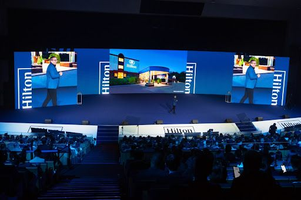

Ten projects, ten results.
Twenty years of integrated work across Asia and the Middle East: global campaigns, product launches, brand builds and large-scale events. Every project below is one I owned or led, and each is listed with the result it delivered.
Filter by discipline, or read the lot.

Emirates Skywards Tier Advancement
Incremental revenue from a targeted campaign that moved 1,500+ members up to their next tier.
Read the case study
Hilton APAC GM & Commercial Conference
Record delegate engagement across 1,400 delegates; Hilton's Global CEO called it their best-organised global event.
Read the case studyThe full index
AHC Skincare: SEA expansion
ecommerce share, four markets · Senior strategic lead
NTUC My First Skool: site and campaign
child registrations in four months · Project owner and copywriter
Casillero del Diablo: Legendary Pairings
online sales · Localisation strategy lead
Emirates Flight Training Academy
first cohort filled in under two months · Client-side brand lead
Malaysia Airlines: This is Malaysian hospitality
Kancil Awards 2023 · Project director and strategist
Emirates Pilot Recruitment
applications · Campaign and production lead
Emirates Skywards: My Family
shipped end to end, still live · Project and digital lead
The UOB Gallery
of heritage, opened on time · Strategy and comms lead
The write-ups are short; the stories behind them are better told in person.
Let's talk